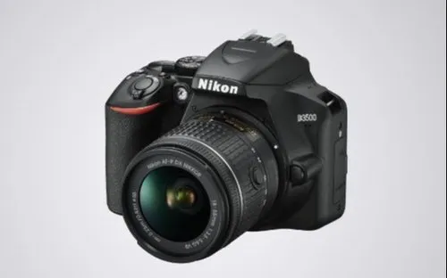

The MacBook Pro 14-inch is a high-performance laptop designed by Apple, primarily aimed at professionals who need powerful computing for tasks like video editing, software development, and graphic design.
 The iPhone 15 Pro Max is Apple's latest high-end smartphone, offering cutting-edge features and enhancements over previous models.
With its advanced camera system, ultra-powerful chip, and refined design, the iPhone 15 Pro Max is perfect for power users,
photographers, and tech enthusiasts.
The iPhone 15 Pro Max is Apple's latest high-end smartphone, offering cutting-edge features and enhancements over previous models.
With its advanced camera system, ultra-powerful chip, and refined design, the iPhone 15 Pro Max is perfect for power users,
photographers, and tech enthusiasts.

The Nikon D3500 is an entry-level DSLR camera, popular among beginner photographers for its ease of use, affordability, and excellent image quality.The Nikon D3500 is perfect for photography enthusiasts who want to start with a DSLR, providing great image quality, ease of use, and essential features at an affordable price.
The Nikon D3500 is an entry-level DSLR camera, popular among beginner photographers for its ease of use, affordability, and excellent image quality.The Nikon D3500 is perfect for photography enthusiasts who want to start with a DSLR, providing great image quality, ease of use, and essential features at an affordable price.